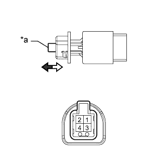
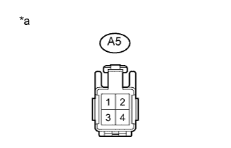
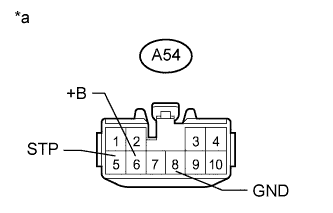

СИСТЕМА ОСВЕЩЕНИЯ > Цепь стоп-сигналов |
| 1.ПРОВЕРЬТЕ НАЛИЧИЕ DTC (СИСТЕМЫ УПРАВЛЕНИЯ ТОРМОЗАМИ) |
Удалите DTC (Нажмите здесь для моделей с 5L-E, Нажмите здесь для моделей с 1GR-FE, 1KD-FTV, Нажмите здесь для моделей с 2TR-FE).
Проверьте DTC (Нажмите здесь для моделей с 5L-E, Нажмите здесь для моделей с 1GR-FE, 1KD-FTV, Нажмите здесь для моделей с 2TR-FE).
| Результат | Следующий шаг |
| OK | А |
| NG (для моделей с 5L-E) | B |
| NG (для моделей с 1GR-FE, 1KD-FTV) | C |
| NG (для моделей с 2TR-FE) | D |
|
| ||||
|
| ||||
|
| ||||
| А | |
| 2.ПРОВЕРЬТЕ ВЫКЛЮЧАТЕЛЬ СТОП-СИГНАЛОВ В СБОРЕ |
|  |
Снимите выключатель стоп-сигналов (Нажмите здесь).
Измерьте сопротивление в соответствии со значениями, приведенными в таблице ниже.
| Контакты для подключения диагностического прибора | Положение переключателя | Заданные условия |
| 1-2 | Штырь отпущен | Менее 8,3 Ом |
| Штырь нажат | 10 кОм или более |
| *a | Штырь |
 | Штырь отпущен |
 | Штырь нажат |
|
| ||||
| OK | |
| 3.ПРОВЕРЬТЕ ЖГУТ ПРОВОДОВ И РАЗЪЕМ (ВЫКЛЮЧАТЕЛЬ СТОП-СИГНАЛОВ - АККУМУЛЯТОРНАЯ БАТАРЕЯ) |
|  |
Отсоедините разъем А5 выключателя стоп-сигналов.
Измерьте напряжение в соответствии со значениями, приведенными в таблице.
| Контакты для подключения диагностического прибора | Состояние | Заданные условия |
| A5-2 - масса | Всегда | 11-14 В |
| *a | Вид спереди разъема со стороны жгута проводов: (к ЭБУ стоп-сигналов) |
|
| ||||
| OK | |
| 4.ПРОВЕРЬТЕ ЖГУТ ПРОВОДОВ И РАЗЪЕМ (ЭБУ УПРАВЛЕНИЯ СТОП-СИГНАЛАМИ - АККУМУЛЯТОРНАЯ БАТАРЕЯ И МАССА) |
|  |
Отсоедините разъем A54 ЭБУ управления стоп-сигналами.
Измерьте напряжение в соответствии со значениями, приведенными в таблице.
| Контакты для подключения диагностического прибора | Состояние | Заданные условия |
| A54-5 (STP) - масса | Педаль тормоза нажата | 11–14 В |
| A54-5 (STP) - масса | Педаль тормоза отпущена | Менее 1 В |
| A54-6 (+B) - масса | Всегда | 11–14 В |
Измерьте сопротивление в соответствии со значениями, приведенными в таблице ниже.
| Контакты для подключения диагностического прибора | Состояние | Заданные условия |
| A54-8 (GND) - масса | Всегда | Менее 1 Ом |
| *a | Вид спереди разъема со стороны жгута проводов: (к ЭБУ стоп-сигналов) |
| Результат | Следующий шаг |
| OK (проблема состоит в том, что лампы мигают) (кроме моделей с 5L-E) | А |
| OK (проблема состоит в том, что лампы не включаются или остаются включенными) | B |
| NG | C |
|
| ||||
|
| ||||
| А | |
| 5.ПРОВЕРЬТЕ СТОП-СИГНАЛ |
Отсоединив разъем ЭБУ системы противоскольжения, убедитесь, что при нажатии педали тормоза стоп-сигналы загораются.
|
| ||||
| OK | ||
| ||